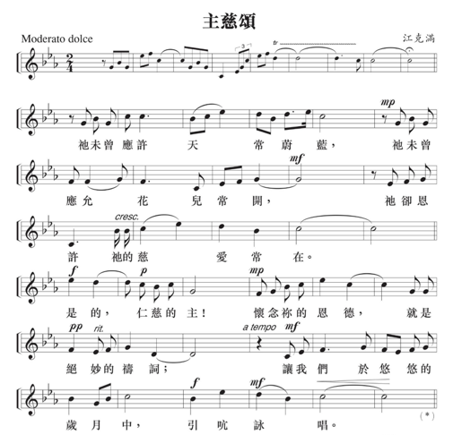
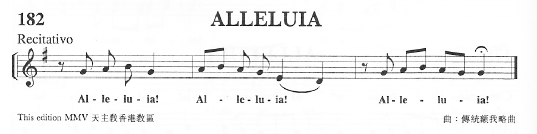
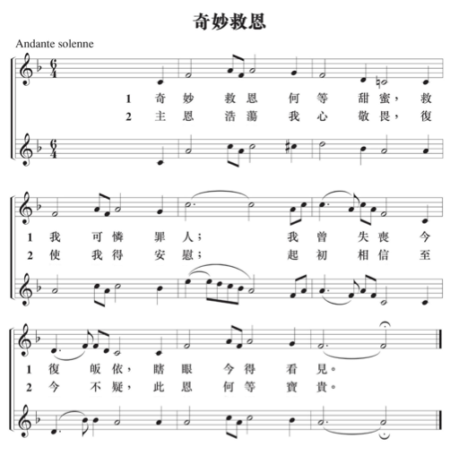
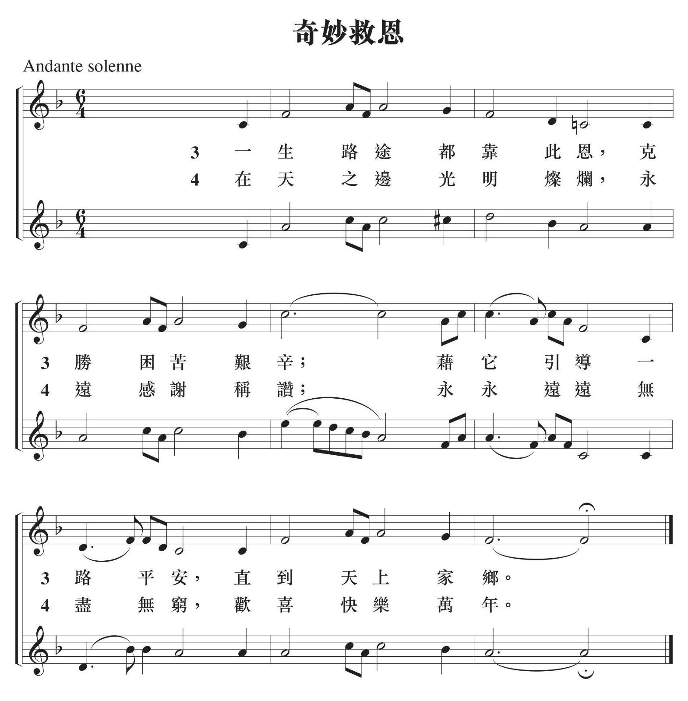

主禮：因父、及子、及聖神之名。
信眾：亞孟。
主禮：願主與你們同在！
信眾：也與你的心靈同在。
主禮：主耶穌基督以自己的死亡和復活使我們成 為天主的子女，分享天主的生命。 黃信章弟兄一生跟隨基督，今日已走完了 人生的路，回到天父懷中。我們懷著敬 意，迎接他的靈柩進入聖堂，並祈求天主 接待他進入天上的耶路撒冷。讓我們誠心 祈禱。（默禱片刻）
全能的天主聖父，請派遣你的天使接待 黃信章弟兄，恩賜他進入天上的家鄉。你 既召叫他跟隨基督，善度人生的旅程。求 你現在為他打開天堂的門，讓他進入向你 謝恩，因為你救贖了他。願他與諸聖一 起，享見你的慈顏容光。因主耶穌基督之 名，求你俯聽我們的祈禱。
信眾：亞孟。
（主禮向靈柩灑聖水）
主禮：黃信章弟兄，願恩賜你洗禮大恩的基督接 待你，領你到天父面前，獲享永生的賞 報。
（文神父引領靈柩入聖堂，家屬跟着行）
（全體念信經，迎靈柩進堂）
信經
我信全能的天主父，天地萬物的創造者。我信父的唯一子，我們的主耶穌基督。祂因聖神降孕，由童貞瑪利亞誕生；在比拉多執政時蒙難，被釘在十字架上，死而安葬；祂下降陰府，第三日從死者中復活；祂升了天，坐在全能天主父的右邊；祂要從天降來，審判生者死者。我信聖神。我信聖而公教會，諸聖的相通。罪過的赦免。肉身的復活。永恆的生命。
亞孟。
（請大家一齊鞠躬）
逾 越 聖 祭（感恩祈禱）
進堂詠「主慈頌」

致候詞
主禮：因父、及子、及聖神之名。
眾：亞孟。
主禮：天主父從死者中復活了耶穌基督，願他的 恩寵及平安常與你們同在。
眾：也與你的心靈同在。
主禮：各位親友，我們的弟兄黃信章曾接受水和 聖神的洗禮，又在感恩禮中得到聖言的教 導，和基督聖體聖血的滋養。我們知道， 世上的感恩禮原是天國盛宴的預像。我們 在這感恩禮中，聯同整個教會，紀念基督 耶穌帶領我們由死亡進入永生的奧蹟，並 祈求天主垂顧黃信章弟兄，恩賜他在天上 參與天國的盛宴。現在我們懷著信心，向 主基督呼求。
垂憐經
主禮：主基督，你是羊群的善牧，你引導亡者到 達永生的居處。求你垂憐。
眾：上主，求你垂憐。
主禮：主基督，你藉十字架與人修好，你使 亡者擺脫一切罪過的桎梏。求你垂 憐。
眾：上主，求你垂憐。
主禮：主基督，你已從死亡中進入復活的永 生，你把同樣的恩寵賜與亡者。求你 垂憐。
眾：上主，求你垂憐。
集禱經
主禮：請大家祈禱：(默禱片刻)
全能的天父，在你內，亡者得到生 命，聖者得到圓滿的喜樂。求你俯聽 我們為你僕人黃信章所作的祈禱，他 已不再依戀繁華繽紛的塵世。求你收 納他進入天上的聖城，得見你慈顏的 榮耀，並在來日使我們在天鄉重逢。 因我們的主耶穌基督，你的聖子，他 和你及聖神，是唯一天主，永生永王
聖 道 禮 儀
讀經
恭讀智慧篇 3:1-6,9
義人的靈魂在天主手裏，痛苦不能傷害他們。在愚人看來，他們算是死了，認為他們去世是受了懲罰，離我們而去，彷彿是歸於泯滅；其實，他們是處於安寧中；雖然在人看來，他們是受了苦，其實，卻充滿著永生的希望。他們受了些許的痛苦，卻要蒙受絕大的恩惠，因為天主試驗了他們，發覺他們配作自己的人：他試煉了他們，好像爐中的黃金；悅納了他們，有如悅納全燔祭。倚恃上主的人，必明白真理；忠信於上主之愛的人，必與他同住，因為恩澤與仁慈，原歸於他所選拔的人。
—上主的話。
眾︰感謝天主。
答唱詠 (詠23)
領：上主是我的牧者，我實在一無所缺。
答句︰上主是我的牧者，我實在一無所缺。
領：上主是我的牧者，我實在一無所缺。他使 我臥在青綠的草場，又領我走近幽靜的水旁，還使我的心靈得到舒暢。
答句︰上主是我的牧者，我實在一無所缺。
領：他為了自己名號的原由，領我踏上了正義 的坦途。縱使我應走過陰森的幽谷，我不 怕凶險，因你與我同住。你的牧杖和短 棒，是我的欣慰舒暢。
答句︰上主是我的牧者，我實在一無所缺。
領：在我對頭面前，你為我擺設了筵席，在我 的頭上傅油，使我的杯爵滿溢。在我一生 歲月裏，幸福與慈愛常隨不離；我將住在 上主的殿裏，直至悠遠的時日。
答句︰上主是我的牧者，我實在一無所缺。
福音前歡呼（按當時情況，也可省略）

領：亞肋路亞。
眾：亞肋路亞。
領：我父所祝福的，你們來吧！承受自創世以 來，給你們預備了的國度吧！（瑪25:34）
眾：亞肋路亞。
福音（我把永生賜給我的羊。）
恭讀聖若望福音 6:37-40
那時候，耶穌說：「凡父交給我的，必到我這裏來；而到我這裏來的，我必不把他拋棄於外，因為我從天降下，不是為執行我的旨意，而是為執行派遣我來者的旨意。派遣我來者的旨意就是：凡他交給我的，叫我連一個也不失落，而且在末日還要使他復活，因為這是我父的旨意：凡看見子，並信從子的，必獲得永生；並且在末日，我要使他復活。」—上主的話。
眾：基督，我們讚美你。
講道
禱 詞
主禮：全能的天主從死者中復活了他的聖子耶穌 基督，讓我們懷著信心，祈求天主收納亡 者，拯救生者。
領：我們的親友黃信章於領洗時曾獲得永生的 保證，願天主現在收納他到達天上的家 鄉，與各位聖人聖女同享永福。為此，我 們同聲祈禱。
眾：上主，請俯聽我們。
領：我們的親友黃信章曾領受基督的聖體── 生命之糧，求天主在末日使他與基督一起 獲享復活的光輝。為此，我們同聲祈禱。
眾：上主，請俯聽我們。
領：我們也紀念所有已亡的親人、朋友和所有 曾經恩待我們的人。願天主豐厚地賞報他 們。為此，我們同聲祈禱。
眾：上主，請俯聽我們。
領：我們也為所有懷著永生的希望而安息於主 的人祈禱，願他們都能享見天主的聖容。 為此，我們同聲祈禱。
眾：上主，請俯聽我們。
領：我們的主耶穌基督，曾因朋友拉匝祿的死 而落淚，他同情一切心靈痛苦的人。願我 們都能在主內找到安慰和力量。為此，我 們同聲祈禱。
眾：上主，請俯聽我們。
領：願我們在今天的祈禱中獲得安慰，彼此扶 持，度過憂傷的時刻，積極迎向未來的生 活。為此，我們同聲祈禱。
眾：上主，請俯聽我們。
主禮：天主聖父，你是我們的保護和力量，求你 仁慈地俯聽你子民的呼求，使亡者得到淨 化，獲享圓滿的救恩。因主耶穌基督之 名，求你俯聽我們的祈禱。
眾：亞孟。
呈奉麵餅
主禮：上主，萬有的天主，你賜給我們食糧，我 們讚美你；我們將這麥麵餅，呈獻給你， 這是大地的産物，也是人類勞動的成果， 願它成爲我們的生命之糧。
眾：願天主永受讚美！
呈奉葡萄酒
主禮：上主、萬有的天主，你賜給我們飲品，我 們讚美你；我們將這葡萄酒，呈獻給你， 這是大地的産物，也是人類勞動的成果， 願它成爲我們的精神飲品。
眾：願天主永受讚美！
主禮：各位兄弟姐妹，請你們祈禱，望全能的天 主聖父，收納我和你們共同奉獻的聖祭。
眾：望上主從你的手中，收納這個聖祭，爲讚 美並光榮他的聖名，也爲我們和他整個聖 教會的益處。
獻禮經
主禮：全能的天主，基督在十字架上奉獻自己， 救贖了我們，求你垂視黃信章弟兄，他既 在生前決心追隨基督，願他藉此獻禮，如 願以償，獲得永遠與基督結合的保證。因 主耶穌基督之名，求你俯聽我們的祈禱。
眾：亞孟。
感恩經
主禮：願主與你們同在。
眾：也與你的心靈同在。
主禮：請舉心向上。
眾：我們全心歸向上主。
主禮：請眾感謝主、我們的天主。
眾：這是理所當然的。
主禮：主、聖父、全能永生的天主，我們時時處 處感謝你，實在是理所當然的，並有助於 我們的得救。
你的聖子由死者中復活，帶給我們新的 希望；他賜給我們永生的許諾，驅逐因死 亡而來的哀痛與失望。天主，為信仰你的 人，生命只是改變，並非毀滅；當我們世 上的寓所拆除後，你又賜給我們天上永恆 的居所。為此，我們隨同天使、總領天 使，以上天上所有聖人聖女，歌頌你的光 榮，不停地歡呼：
眾唱：聖、聖、聖、上主、萬有的天主，你的光 榮充滿天地。歡呼之聲，響徹雲霄。奉上 主名而來的，當受讚美。歡呼之聲，響徹 雲霄。
(教友跪下，非教友仍然站立)
主禮：上主，你實在是神聖的，你是一切聖德 的根源。因此，我們求你派遣聖神，聖 化這些禮品，使成為我們的主耶穌基督 的聖體聖血。
主禮：他甘願捨身受難時，拿起麵餅，感謝了 你，把麵餅分開，交給他的門徒說：
你們大家拿去吃：
這就是我的身體，
將為你們而犧牲。
主禮：晚餐後，他同樣拿起杯來，又感謝了你， 交給祂的門徒說：
你們大家拿去喝：
這一杯就是我的血，
新而永久的盟約之血，
將為你們和眾人傾流，
以赦免罪惡。
你們要這樣做，來紀念我。
主禮：信德的奧蹟。
眾：主，我們傳報你的聖死，歌頌你的復活， 期待你光榮地再來。
主禮：上主，因此我們紀念基督的聖死與復活， 向你奉獻生命之糧、救恩之杯，感謝你使 我們得在你台前，事奉你。我們懇求你， 使我們在分享基督的聖體聖血之後，因聖 神合而為一。
主禮：上主，求你垂念普世的教會，使你的子民 和我們的教宗方濟各、我們的宗座署理 湯漢樞機，以及全體聖職人員，都在愛德 中，日趨完善。
主禮：求你垂憐我們的弟兄黃信章，你(今天)從 人世將他召回。他已藉著聖洗與基督同 死，求你也使他和基督一樣地復活。
主禮：求你垂念懷著復活的希望而安息的弟兄姊 妹；並求你垂念所有去世的人，使他們享 見你光輝的聖容。
主禮：求你垂憐我們眾人，使我們得與天主之母 童貞榮福瑪利亞、諸聖宗徒，以及歷代你 所喜愛的聖人聖女，共享永生；並使我們 藉著你的聖子耶穌基督，讚美你、顯揚 你。
主禮：全能的天主聖父，願一切崇敬和榮耀，藉 著基督，偕同基督，在基督內，並在聖 神的團結中，都歸於你，直到永遠。
眾：亞孟。
天主經
主禮：我們既遵從救主的訓示，又承受他的教 導，才敢說：
眾：我們的天父，願你的名受顯揚，願你的國 來臨；願你的旨意奉行在人間，如同在天 上。求你今天賞給我們日用的食糧；求你 寬恕我們的罪過，如同我們寬恕別人一 樣；不要讓我們陷於誘惑；但救我們免於 凶惡。
主禮：上主，求你拯救我們免於一切兇惡，恩賜 我們今世平安，使我們仰賴你的仁慈，永 久脫免罪惡，並在一切困擾中，安然無 恙，虔誠期待永生的幸福和救主耶穌基督 的來臨。
眾：天下萬國，普世權威，一切榮耀，永歸於 你。
平安經
主禮：主耶穌基督，你曾對宗徒們說：「我將平 安留給你們，將我的平安賞給你們。」求 你不要看我們的罪過，但看你教會的信 德，並按照你的聖意，使教會安定團結。 你是天主，永生永王。
眾：亞孟。
主禮：願主的平安常與你們同在。
眾：也與你的心靈同在。
主禮：請大家互祝平安。(大家點頭，微笑，祝平安)
羔羊頌
全體：除免世罪的天主羔羊，求你賜給他們安 息。
除免世罪的天主羔羊，求你賜給他們安 息。
除免世罪的天主羔羊，求你賜給他們永遠 的安息。
(教友跪下，非教友仍然站立)
領聖體
主禮：請看天主的羔羊；請看除免世罪者。被邀 請來赴聖宴的人是有福的。
全體：主，我當不起你到我心裏來，只要你說一 句話，我的靈魂就會痊癒。
(請坐，現在是天主教徒領聖體的時間，請各位非天主教徒的親友安留座位上)
領主詠
領主後經
主禮：上主天主，我們為所領受的天上食糧而感 謝你。你既恩賜我們藉這生命之糧而與基 督結合，求你使我們與黃信章弟兄一同蒙 受你聖子的救贖，今世生活在基督內，來 日與基督和眾聖者一起，永遠在天國的喜 樂中生活。因主耶穌基督之名，求你俯聽 我們的祈禱。
眾：亞孟。
辭 靈 禮
主禮：各位親友，在結束祈禱之前，讓我們正式 向黃信章弟兄的遺體辭別。願我們的哀愁 遠去，重懷希望。到了預定的日子，主基 督會徹底地摧毀死亡；那時，我們將要復 活，在主的愛內重逢，永遠團聚一起。
（全體靜默片刻）
灑聖水（主禮向靈柩灑聖水）
主禮：天主，你藉著洗禮，滌除人的罪污，給予 信者新生，使他們作基督的門徒。 願黃信章弟兄現今也在天上繼續伴隨基 督，得享永生。
眾：亞孟。
奉香（主禮向靈柩奉香）
主禮：天主，你祝聖了信者，使他們的身體成為 你聖神的宮殿。願黃信章弟兄的善行，猶 如馨香，蒙你悅納，願他在末日獲得復活 的光榮。
眾：亞孟。
諸聖禱文
領：上主，求你垂憐。 眾：上主，求你垂憐。
領：基督，求你垂憐。 眾：基督，求你垂憐。
領：聖母瑪利亞。 眾：請為亡者祈求。
領：上主的天使。 眾：請為亡者祈求。
領：聖若瑟。 眾：請為亡者祈求。
領：聖若翰洗者。 眾：請為亡者祈求。
領：聖伯多祿、聖保祿。 眾：請為亡者祈求。
領：聖安德肋。 眾：請為亡者祈求。
領：聖若望。 眾：請為亡者祈求。
領：主的聖宗徒。 眾：請為亡者祈求。
領：聖斯德望及諸位殉道聖人聖女。 眾：請為亡者祈求。
領：聖奧思定。 眾：請為亡者祈求。
領：聖方濟和聖道明。 眾：請為亡者祈求。
領：聖若翰宗徒。 眾：請為亡者祈求。
領：中國諸位聖人聖女。 眾：請為亡者祈求。
領：天上的聖人聖女。 眾：請為亡者祈求。
主禮：天上的聖者，請來扶助黃信章弟兄；上主 的天使，請來迎接他；請接他到達天父台 前。
眾：請迎接他，領他到天父台前。
主禮：基督召喚了他，願基督收納他，領他回到 天父的懷抱。
眾：請迎接他，領他到天父台前。
主禮：上主，求你賜給他永遠的安息，並以永恆 的光輝照耀他。
眾：請迎接他，領他到天父台前。
辭靈禱文
主禮：慈悲的父，我們懷著確切的希望，把 黃信章弟兄託付在你的手中。
願他與所有在基督內安眠的人，來日如同 基督一樣，復活起來，進入永生。
主禮：慈悲的主，求你轉面俯聽我們的祈求，為 你的僕人黃信章弟兄打開天鄉的大門，收 納他在你懷中安息，並使我們仍在世途中 的親友，堅信你的許諾，期待來日在基督 內重逢，與你及所有聖者，永遠同享天國 的幸福。因我們的主耶穌基督，你的聖 子、他和你及聖神，是唯一天主，永生永 王。
眾：亞孟。
（主禮伸手向著靈柩祝禱）
主禮：黃信章弟兄：願天使領你進入天堂，願殉 道諸聖迎接你，並領你進入天上聖城耶路 撒冷。願天使的樂隊迎接你，與諸聖一起 到達天主台前。
【獻花和瞻仰遺容，隨後報告事項。主禮帶領全體行三鞠躬禮。
禮畢，主禮帶領靈柩步出聖堂。請親友攜同祈禱書，保持肅靜，隨後離去。】
火 葬 禮
致候
請大家一起詠唱「奇妙救恩」第一、二節

主禮：各位親友，黃信章弟兄的遺體將在這裏火化，我們把他交託給天父。讓我們懷著對耶穌基督死而復活的信仰，為黃信章弟兄祈禱。
聖言
主禮：按瑪竇福音記載，主耶穌說：「我父所祝福的，你們來吧！承受自創世以來，給你們預備了的國度。」（瑪25:34）
祈禱
主禮：請大家祈禱：（默禱片刻）
全能永生的天主，黃信章弟兄生前曾蒙受你的照顧和安慰。
我們懇求你，收納他到你天上聖徒的居所，並求你垂顧哀慟的親友，恩賜大家永生重逢的希望。因主耶穌基督之名，求你俯聽我們的祈禱。
眾：亞孟。
灑聖水
（主禮向靈柩灑聖水）
主禮：黃信章弟兄，你藉著洗禮歸於基督和他的死亡，與他結合，願你也與基督同享永生。
把亡者交託給天主
主禮：天主既將我們的弟兄黃信章召回他的身邊，他的遺體將被火化。我們的軀體是由塵土而來，又要歸於塵土；但主基督會改變我們可朽壞的軀體，使之相似他光榮的身體。讓我們把黃信章弟兄交託給上主，願主收納他，並且在末日使他復活。
（全體默禱片刻）
禱詞
主禮：各位親友，主耶穌基督曾經說過：「我就是復活，就是生命；信從我的，即使死了，仍要活著。」（若11:25）讓我們懷著這份信仰，向主耶穌祈禱。
領：主基督，你曾安慰哀傷的瑪爾大和瑪利 亞，求你憐憫哀慟的人，抹去他們的淚 痕。
眾：上主，求祢垂憐。
領：主基督，你曾在朋友拉匝祿的墓前落淚，求你安慰亡者的親友。
眾：上主，求祢垂憐。
領：主基督，你使亡者得到新的生命，求你把永生賜予我們的弟兄黃信章。
眾：上主，求祢垂憐。
領：主基督，你曾把天國許諾給悔改的右盜，求你帶領黃信章弟兄進入天國的喜樂。
眾：上主，求祢垂憐。
領：主基督，我們的弟兄黃信章曾領受永生的洗禮，又曾接受聖神的傅油，求你使他在天上與諸聖一起，在共融中生活。
眾：上主，求祢垂憐。
領：主基督，我們的弟兄黃信章曾領受你的聖體聖血，得到滋養。求你使他得享天國的筵席。
眾：上主，求祢垂憐。
領：主基督，你是憂苦者的安慰，求你堅強我們，使我們懷著信德，善度此生，期待永生重逢的日子。
眾：上主，求祢垂憐。
主禮：讓我們以基督所教導的經文，與亡者一 起，向天父祈禱：
全體：我們的天父，願祢的名受顯揚；願你的國 來臨，願你的旨意奉行在人間，如同在天 上。求你今天賞給我們日用的食糧；求你 寬恕我們的罪過，如同我們寬恕別人一 樣；不要讓我們陷於誘惑，但救我們免於 兇惡。
主禮：天主，你是聖善的，是生命之王。求你接 納我們為你僕人所作的祈禱。你善察人 心，亦知道黃信章弟兄願意承行你的旨 意，求你滿全他的心願，以你的仁慈，恩 賜他加入天上聖者的行列，正如他在世時 曾加入你子民的行列一樣。因主耶穌基督 之名，求你俯聽我們的祈禱。
眾：亞孟。
祝禱
（主禮可向亡者家人伸手祝福）
主禮：慈悲的主，你樂意俯聽謙卑者的祈禱，你明白人的哀傷。求你俯聽你子民的呼求，垂視在場的親友，賜予他們力量，使他們保持著希望，期待你無盡的恩許，因主耶穌基督之名，求你俯聽我們的祈禱。
眾：亞孟。
（主禮向靈柩劃十字）
主禮：上主，求祢賜給黃信章弟兄永遠的安息。
眾：並以你的永光照耀他。
主禮：願諸聖迎接他到天主台前，與諸信者一 起，永享安息。
眾：亞孟。
（三鞠躬。禮成）
（家屬、親屬和親友圍繞靈柩站立詠唱「奇妙救恩」第三、四節。）
(家屬按掣）

Revision 27
Last
Modified: Sunday, January 7, 2024